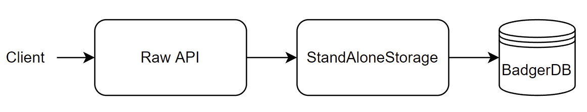
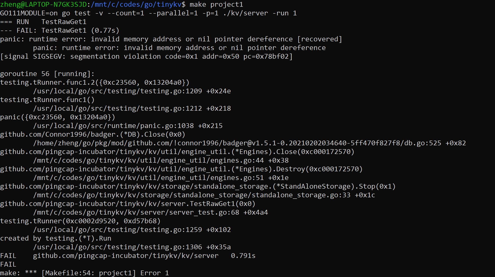
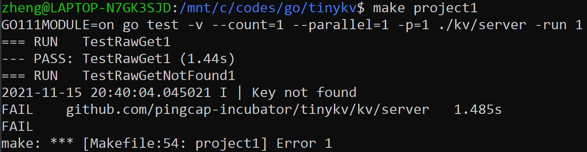
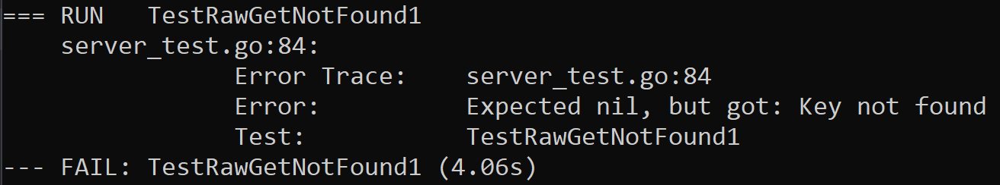

任务目的
熟悉Go语法，熟悉面向对象程序设计。
任务说明
Project1需要实现一个单节点、非分布式的K/V存储gRPC服务，本质上是对BadgerDB进行封装，以实现Put/Delete/Get/Scan四种基本操作，以及对Column Family的支持。
该Project大致分为两部分：
- StandAloneStorage类的实现。StandAloneStorage类实现了Storage接口，Storage接口提供了用于操作K/V数据库的Start、Stop、Write、Reader四个方法，对于StandAlone的数据库来说，这四个方法就是对底层的BadgerDB进行读写。
- Raw API的实现。Raw API为服务器对外暴露的API，用于接收请求，通过调用StandAloneStorage类的方法处理请求，然后返回响应。Raw API需要实现前述的四种基本操作。
上述调用关系如下图所示：
任务实现
StandAloneStorage类的实现
StandAloneStorage类的实现基本不需要直接使用BadgerDB的方法，因为engine_util包中已经封装了许多操作BadgerDB的方法，且支持了Column Family，直接调用即可。
func NewStandAloneStorage
该函数不是StandAloneStorage类的方法，接收config，返回一个新创建的StandAloneStorage指针。由于engines.go文件中封装的方法都以Engines类作为接收者，我们需要在创建StandAloneStorage的时候创建一个Engines实例。
1 | type StandAloneStorage struct { |
Raft Engine在Project1中暂时不需要用到，但如果设为nil，自带的Engines.Close方法会尝试调用nil.Close()，引发错误，因此必须进行创建。
func Start
根据Badger官方文档，一个Badger数据库通过Open方法打开后即可使用，最后再通过Close方法关闭。NewStandAloneStorage函数中调用的CreateDB函数已经调用了Open方法，此时数据库已经可以使用，因此Start方法无需执行任何操作。
1 | func (s *StandAloneStorage) Start() error { |
func Stop
Engines.Destroy一方面调用Engines.Close，关闭两个BadgerDB，另一方面删除目录。
1 | func (s *StandAloneStorage) Stop() error { |
func Write
Write方法接收一个名为batch，元素类型为storage.Modify的切片。Modify类包含一个接口成员Data，Data可以为Put类型或者Delete类型，分别对应增加和删除操作。Put类型包含Key、Value和Cf三个成员，而Delete类型没有Value成员。
engine_util包中的WriteBatch类提供了写入KV对到数据库的方法WriteToDB。对于Write方法的实现，我们遍历Modify切片，对于每个修改项利用WriteBatch.SetCF方法将其附加到WriteBatch的底层切片末尾（类型为badger.Entry），最后再调用WriteToDB进行写入。
1 | func (s *StandAloneStorage) Write(ctx *kvrpcpb.Context, batch []storage.Modify) error { |
当Modify.Data的类型为Delete时，没有Value成员，m.Value()会返回nil，在badger.Entry当中，Value成员为nil时也表示删除，所以上述代码能够正确处理添加和删除两种操作。
func Reader
Reader方法需返回一个实现StorageReader接口的类，该接口包含GetCF、IterCF和Close三个方法。此处我定义了一个名为Reader的类实现该接口。
engine_util包中的GetCF函数和NewCFIterator函数可用于实现前两个方法，这两个函数分别需要传入badger指针和badger.Txn指针，因此，我们的自定义Reader类，第一，需要包含StandAloneStorage成员，以访问badger；第二，需要包含badger.Txn成员，这个成员在IterCF方法中通过badger.NewTransaction函数进行创建。此外，为了在Close方法中关闭迭代器，我们还需要包含迭代器成员。综上所述，Reader类和Reader方法定义如下：
1 | type Reader struct { |
GetCF方法和IterCF方法的实现参照前文。对于Close方法，需要执行关闭迭代器和丢弃txn两个操作。
1 | func (r *Reader) GetCF(cf string, key []byte) ([]byte, error) { |
Raw API的实现
func RawGet
调用Reader.GetCF即可。需要注意的点是resp.NotFound成员必须进行赋值。
1 | func (server *Server) RawGet(_ context.Context, req *kvrpcpb.RawGetRequest) (*kvrpcpb.RawGetResponse, error) { |
func RawPut
RawPutRequest仅包含一个请求，因此只需要创建一个长度为1的Modify切片放入请求，然后调用Write。
1 | func (server *Server) RawPut(_ context.Context, req *kvrpcpb.RawPutRequest) (*kvrpcpb.RawPutResponse, error) { |
func RawDelete
同RawPut。
1 | func (server *Server) RawDelete(_ context.Context, req *kvrpcpb.RawDeleteRequest) (*kvrpcpb.RawDeleteResponse, error) { |
func RawScan
流程如下：
- 获得Reader
- 调用Reader.IterCF获得迭代器it
- 将迭代器it定位至req.StartKey处
- 创建切片，循环读取KV对放到切片末尾，直到KV对数量达到req.Limit，或者迭代器失效
- 返回响应
1 | func (server *Server) RawScan(_ context.Context, req *kvrpcpb.RawScanRequest) (*kvrpcpb.RawScanResponse, error) { |
容易出错的两个地方：一是没有reader没有关闭，二是迭代器没有先通过Seek方法定位到StartKey处。
错误与调试
Engines的RaftDB留空
导致Destroy Engines时无法访问nil.Close()。
没有设置RawGetResponse.NotFound
RawGet的返回值问题
当key not found时，RawGet算作正常返回，不应该返回error。
